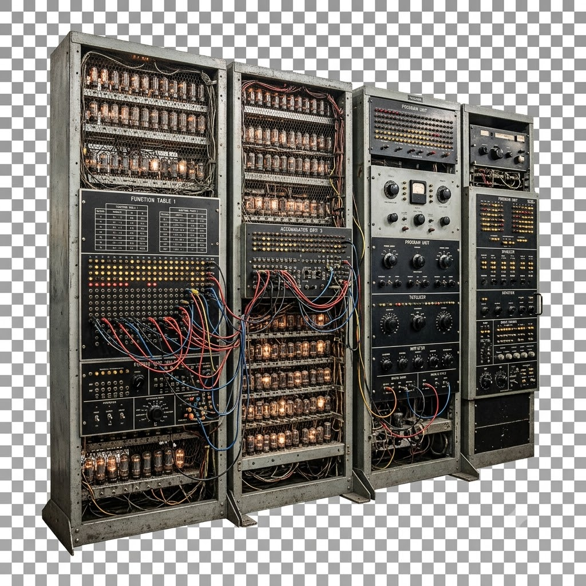

Meu primeiro post
Por: Rafael das Chagas de Oliveira
Boas-vindas ao meu novo blog! Aqui vou compartilhar dicas de programação e curiosidades da área de tecnologia.
Vou compartilhar conhecimentos sobre tecnologia e programação
Por: Rafael das Chagas de Oliveira
Boas-vindas ao meu novo blog! Aqui vou compartilhar dicas de programação e curiosidades da área de tecnologia.
Por: Rafael das Chagas de Oliveira
Em 1991, pesquisadores da Universidade de Cambridge criaram a primeira webcam para não perderem tempo indo até a cozinha e encontrando a cafeteira vazia. Eles monitoravam o nível do café em tempo real nos seus monitores.

Por: Rafael das Chagas de Oliveira
Apesar de Alan Turing ser conhecido como pai da computação, ele não criou o primeiro computador.
Entre os primeiros computadores, um deles foi chamado Colossus projetado por Tommy Flowers durante a
Segunda Guerra Mundial e também, praticamente na mesma época, o ENIAC foi projetado por J. Presper
Eckert e John Mauchly.
Embora o Colossus tenha funcionado antes como um "herói de guerra" especializado, o ENIAC é
frequentemente chamado de "pai" por ser o primeiro programável de uso geral. E aí, qual você
consideraria como o primeiro computador?